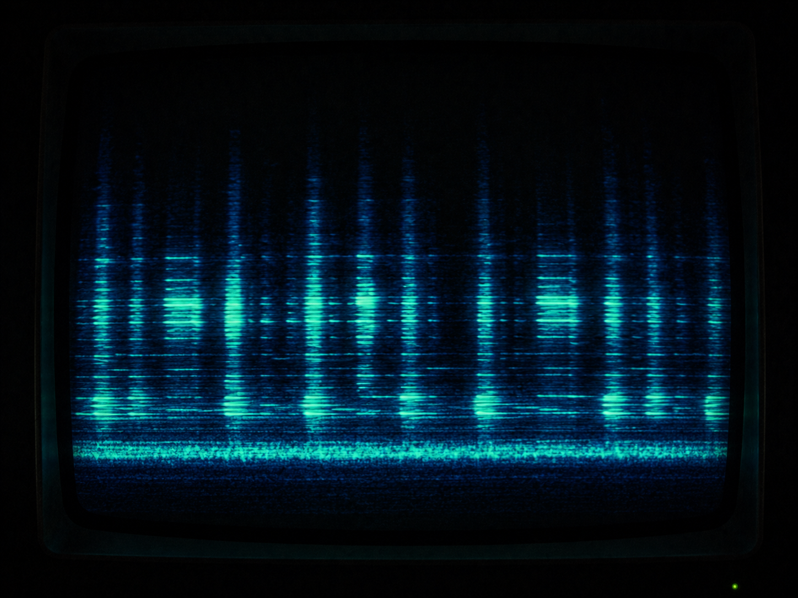

·································· · D E S C E N T · 35 / 40 · ··································

Not surveillance. Foresight, offered freely.
It is climbing now, carrying the ember up.
Toward the lid. Toward the lie of the calm Desert.